HanGun — Trip Bill Splitter
A trip bill splitter that covers the full loop: create a Project, scan a QR to join, log bills, and see exactly who pays whom, with debts netted to the fewest transfers. Built as a full-stack app with Next.js 16 + Supabase.
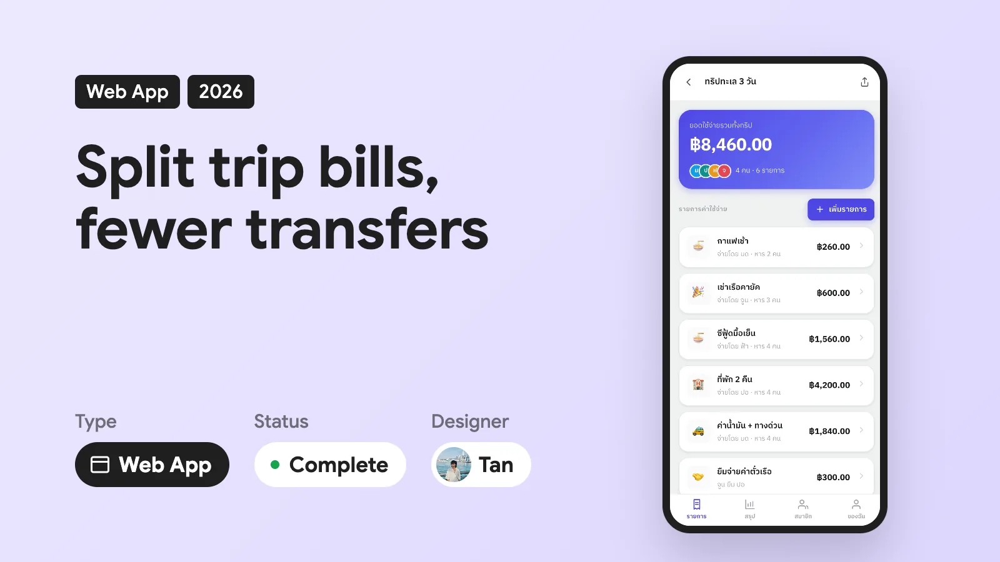
A bill splitter for trips with friends: create a Project, have friends scan a QR code to join, log expenses, and the app tells you exactly who owes whom and how much, with debts netted out so everyone makes as few transfers as possible.
The problem
Why is splitting a trip bill a headache every time?
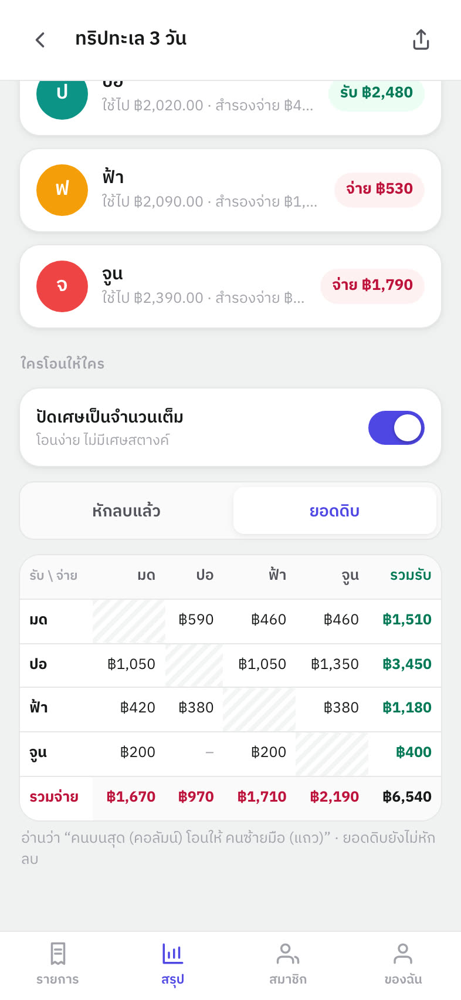
The trip is over but the bill isn’t. One person paid for the stay, another for the car, another for dinner. Not everyone came to every meal, some people didn’t drink. In the end someone does the math in the group chat, and the transfers still go back and forth.
After the trip, nobody remembers who paid for what
Expenses live in each person’s head with no shared record. When it’s time to settle up, nobody can recall who paid what or how much.
Splits aren’t even, and manual math goes wrong
Some meals had fewer people, some people skipped the drinks, some bills were one person’s own debt. A flat even split doesn’t work; each item has to be worked out separately.
The math is done, but the transfers are a mess
A owes B, B owes C, C owes A — after netting, a few transfers would settle everything, but nobody does that calculation.
Chasing money in chat, with no proof
Who has paid and who hasn’t? You scroll back through the group chat looking for slips, and the outstanding amounts are never clearly updated.
Most bill-splitting apps require an account
To get everyone in, each friend has to download the app, sign up and verify an email. Many give up at that step.
The solution
One link, one QR code — join instantly with no sign-up, and let the app do the math
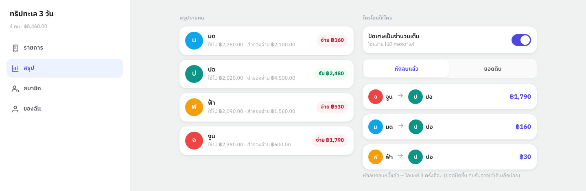
One Project, one shared QR — join in 10 seconds
The owner creates a Project and gets a QR code and link. Friends scan it, enter a name, and they’re in. No login page, no email to verify.
Three split modes in one place
Equal split / custom per person / personal debt — covers every kind of bill on a real trip. Leftover satang are distributed so totals always add up to the baht.
Transfer Matrix with automatic debt netting
Switch between “raw” and “netted” views. The app reduces debts to the fewest transfers that still settle everyone.
Everyone has a payment QR in their profile
When joining, each person uploads their own PromptPay QR. When you need to pay someone back, tap their name and their QR is right there to scan.
A “Paid” button + automatic slip reading
After transferring, tap to confirm and attach the slip. The app reads the QR code on the slip as proof, and the outstanding amount disappears from the screen right away.
User Flow
4 steps — from opening the app for the first time to fully settled
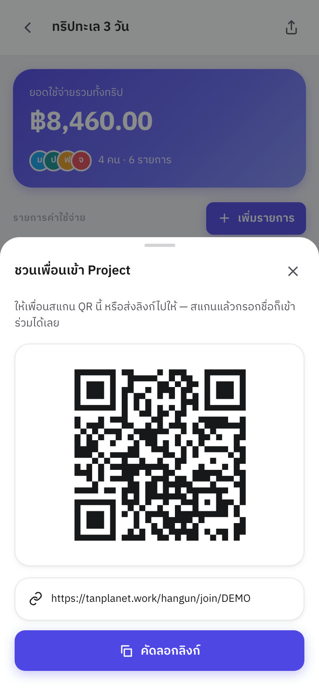
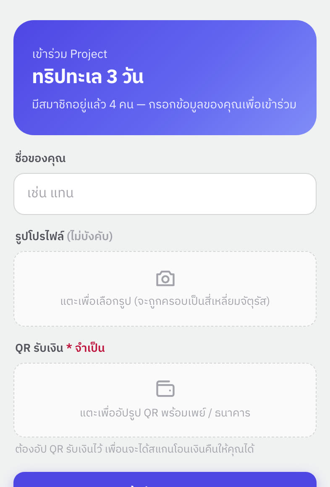
Create a Project
Name the trip, set up a profile + upload a payment QR
Invite friends
Share the QR/link; friends scan and join on their own
Log bills
Anyone can add an expense and pick a split mode
Transfer + settle
See who to pay, scan to pay, tap “Paid”
Tech Stack & Architecture
Next.js 16 + Supabase — a stack one person can run end to end
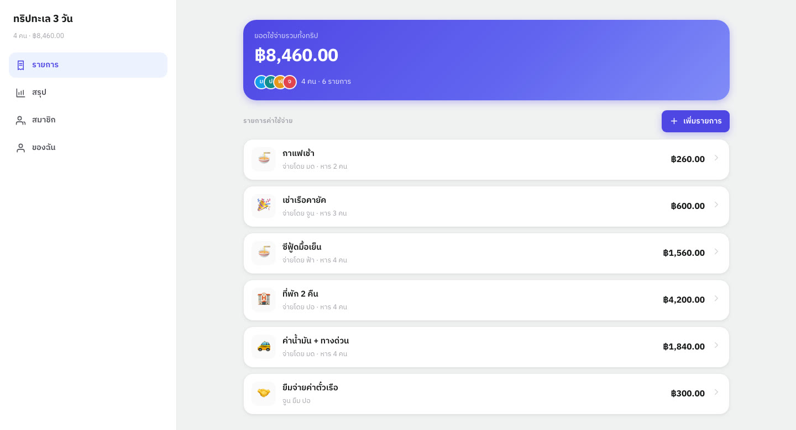
Next.js Server Actions remove the REST API layer entirely — mutations are plain TypeScript functions the client can call directly · Supabase puts Postgres + Storage for profile photos/QR codes in one place, with no backend to set up · Vercel deploys on git push. The result is a full-stack app that one person can build and maintain, from the database to production.
What I built — 8 core features
The full loop, from creating a trip to everyone being settled
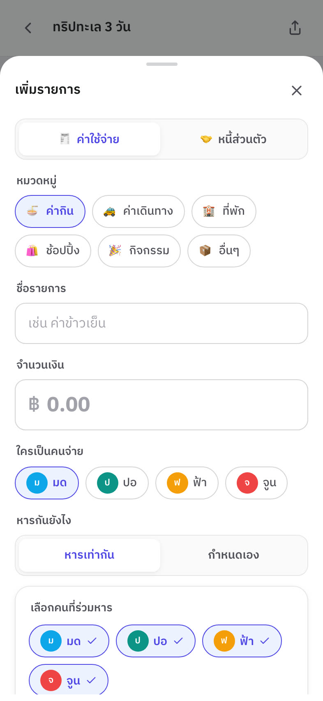
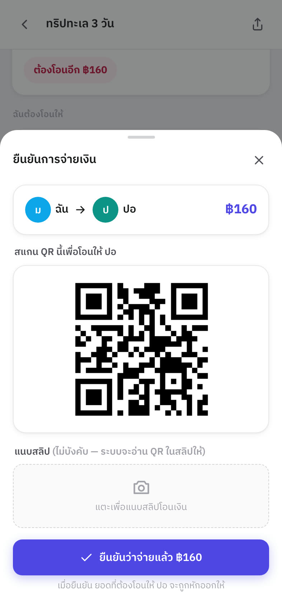
Create & join a Project
Start a trip and get a QR/link; friends scan to join themselves — no login anywhere
Profile + payment QR
Everyone sets a name and photo and uploads a PromptPay QR (required), so friends can scan to pay them back
Expense logging in 3 modes
Equal split / custom per person / personal debt — with categories + slip photos
Per-person summary
Each person sees clearly how much they paid, how much they owe, and whether their net balance is negative or positive
Transfer Matrix
A who-pays-whom table that switches between raw and netted views, with a shortcut to pay
Paid (Settle)
Confirm a transfer and attach a slip; the outstanding amount is removed from the calculation immediately
Slip QR reading
Upload a slip and the app scans the QR in the image with jsQR, pulling the transfer reference number as proof
Project owner permissions
The owner can remove members or delete the whole Project, verified with a secret owner token stored on the device
Hacking the problems
6 technical problems I had to solve myself, with no playbook
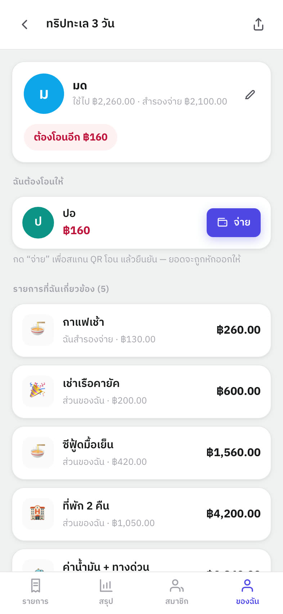
Netting debts down to the fewest transfers
Showing raw debts means every pair that owes each other has to transfer — A→B, B→C, C→A. It’s messy and costs more transfer fees than needed.
simplifyDebts() uses greedy min-cash-flow — it pairs the person with the largest positive balance with the person with the largest negative balance, one pair at a time, until all debts are cleared. That leaves the fewest transfers that still settle everyone.Splitting must not lose satang
100 baht / 3 people = 33.33 × 3 = 99.99 — one satang goes missing, the total no longer matches the bill, and across many items the error adds up.
splitEqual() — it works in whole satang, then hands out the remainder one satang at a time to the first people. The shares always add up exactly to the bill.No login, but the app still needs to know who’s who
With no accounts, how do you tell the owner apart from regular members, and remember who this device belongs to?
join_code is a public token in the QR/link so anyone can join, while owner_token is a secret kept only in the owner’s localStorage. Member identity is tied to the device via localStorage, so reopening the site takes you straight back to your trip.Phone photos hit the 1MB Server Action limit
When friends join, profile photos/QR images from phone cameras are often 3–8MB — over the Server Action body limit, so it errors out immediately.
compressImage() shrinks images on the client with canvas before upload (3.1MB → ~98KB), swaps the file in the input via DataTransfer, and raises bodySizeLimit to 8MB for headroom.Reading the QR on transfer slips automatically
I wanted slips to be verifiable proof, not just any image someone happens to attach.
jsQR on a canvas (reading the sharp original file before compression), and the transfer reference number is stored with the settlement.Mobile-first, done wrong and then fixed
I put the main layout inside a min-width media query — desktop looked fine, but on mobile content hit the screen edges and the tab bar didn’t stick to the bottom.
From prototype to production
It started as a single HTML file — proving the flow before investing in the real stack
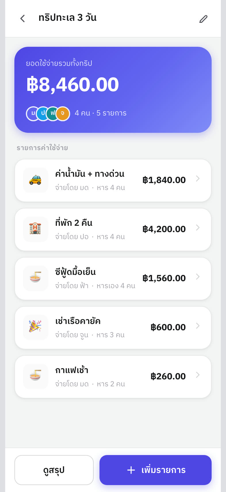
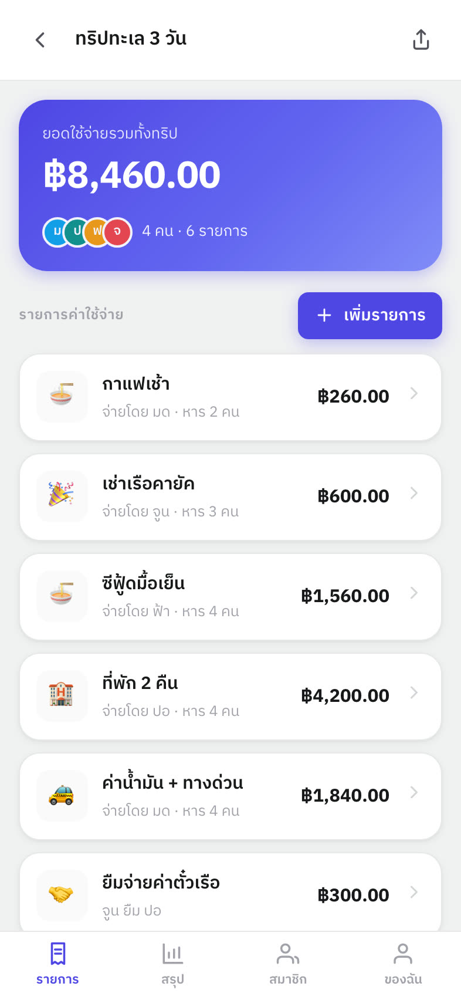
HanGun didn’t start with Next.js. It started as a single HTML file running React from a CDN, to test whether the user flow and the Transfer Matrix calculation actually worked. Once I was confident the problem was right, I rebuilt it as a full-stack app.
Prototype First
A single HTML file to test the flow + calculation
Solo Build
Designed, coded and deployed solo
AI-Augmented
Built with Claude Code from design to deploy
Live in Production
Live at tanplanet.work/hangun
What I took away from this project
4 lessons from building HanGun, from start to production

Starting with a single HTML file showed early that a “raw vs netted” Transfer Matrix was what users actually wanted. Jumping straight into Next.js + a database would have meant spending time on infrastructure before knowing if the problem was right.
lib/engine.ts is all pure functions, tied to neither React nor the database — the same input always gives the same output. That makes the splitting and netting logic easy to test and trust. The UI just calls it, so money correctness never gets mixed up with display concerns.
The real problem was “how do I get every friend to join?” The answer wasn’t a better account system but a no-login model: scan the QR and you’re in. Good UX is often about cutting what isn’t needed.
The responsive bug made it clear that “mobile-first” isn’t just a phrase. Putting the main layout inside a min-width media query means designing desktop-first without realizing it. Get the base layout right at 390px first, then scale up.